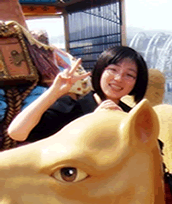

 |
| 人生格言：毋意，毋必，毋固，毋我 |
| |
热情活泼，宾至如归，她的微笑让每一个初来百年的客人感受到春天般的温暖，她的乐于助人带给每位同事夏天般的热情，她，就是综合部的刘珊。
百年是她毕业后的第一份工作，她是百年团队的第九名成员。虽然初入社会，但是刘珊以积极努力的心态迅速投入到工作角色中。每个初入百年的人，第一眼看到的便是她的身影：一抹微笑，一个鞠躬，一声问候，顷刻间使百年大家庭的形象深入人心！她为公司对外事项的办理搭建起有效沟通的桥梁。
每天早晨，为了准备迎接同事们的到来，她至少提前一个小时就来到职场开始忙碌：开各个办公室的门，收发报刊、文件，准备晨迎音乐、礼仪等等。日常工作中，她有条不紊地安排会议室，对领导交办事项一丝不苟，各个大型会议的招待人员、各种活动中的积极分子，刘珊忙碌的身影无时无处不在；对同事健康的热忱关心、每一次天气变化的温馨提示、每一条为外地同事提供的便利资讯…虽然这些都是一点一滴的小事，但是每一天执着的坚持就成为一件了不起的大事！
她的热情可以消除你来自陌生的恐惧，她的关切可以激发你沉寂已久的爱心。她在自己平凡的岗位上默默奉献，也在为大家提供力所能及的所有服务。她带给大家快乐，更带给百年大家庭勃勃生机、活力和温暖！
|
|
|